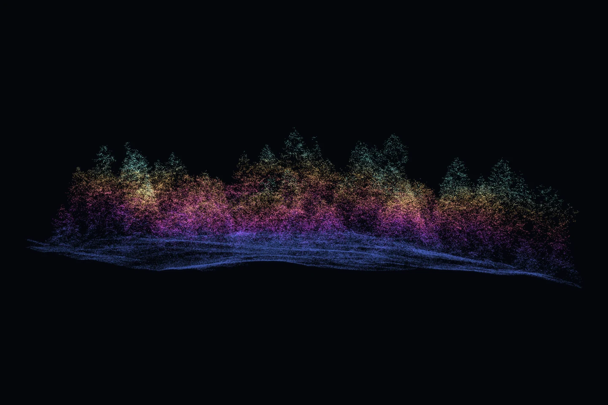

Seattle · laser returns
Drag to orbit · Pinch or scroll to zoom · Two fingers to pan
Canopy expands and returns · Ground stays still
King County West 2021 LiDAR · Height, sun and frost colors from the scan